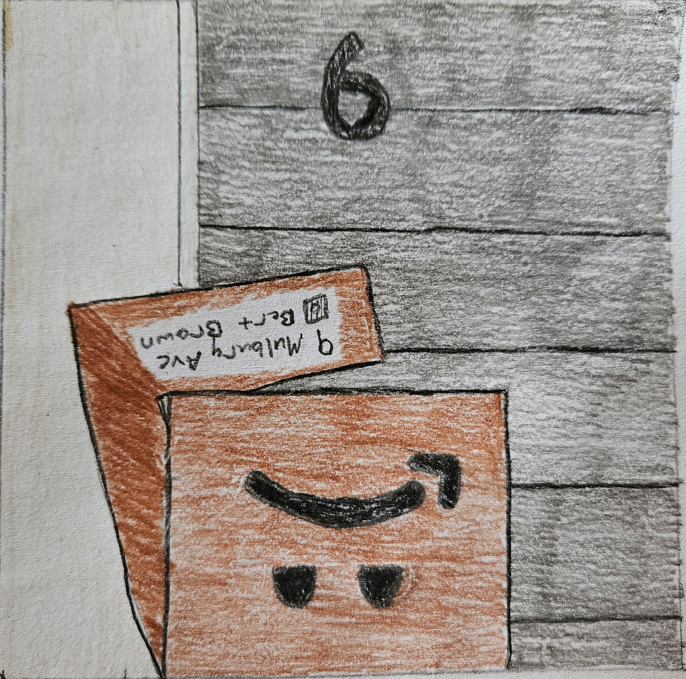
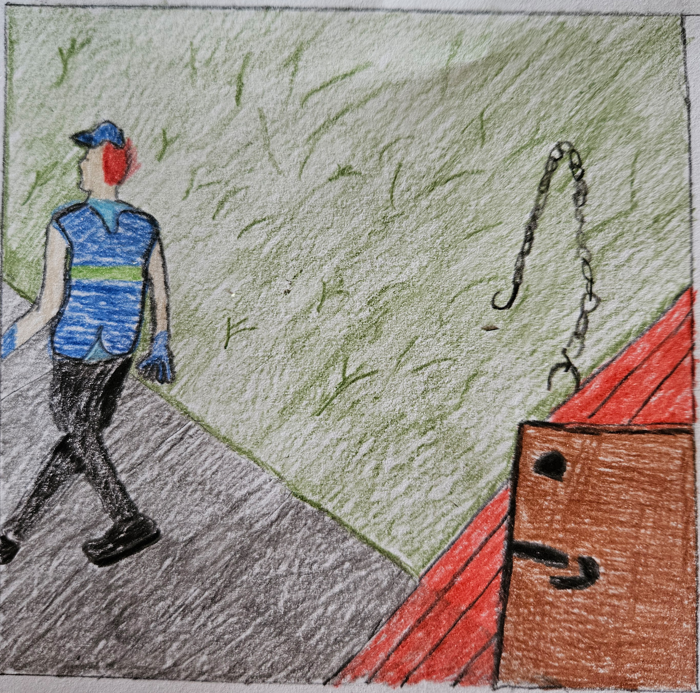
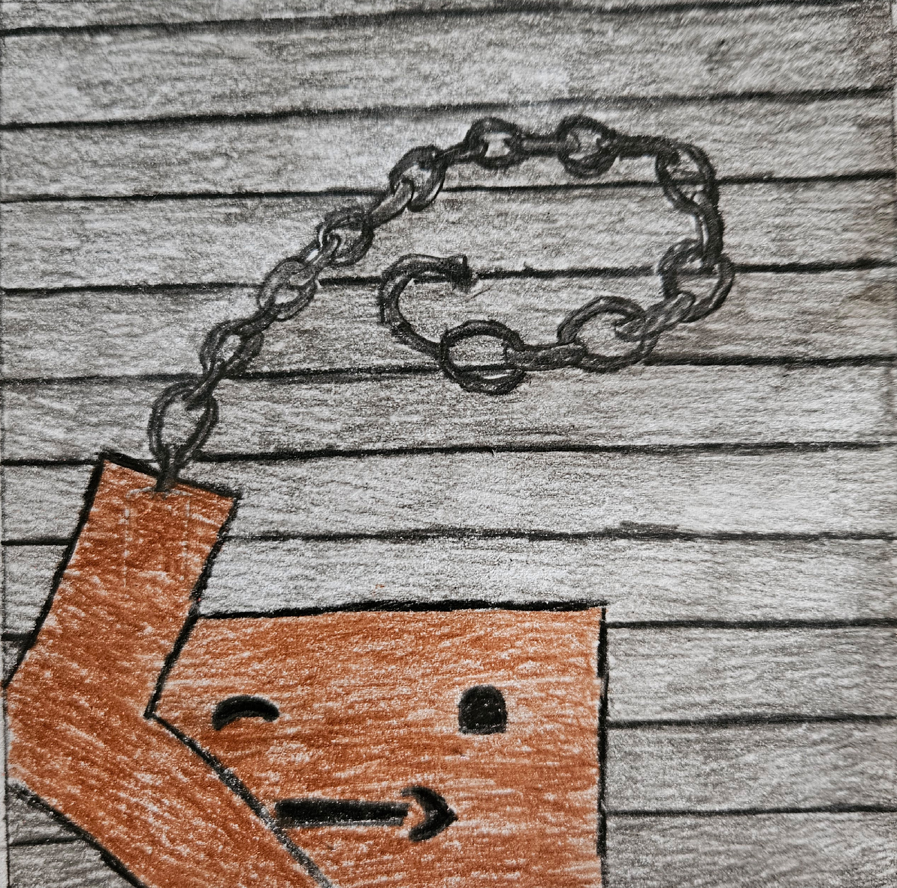
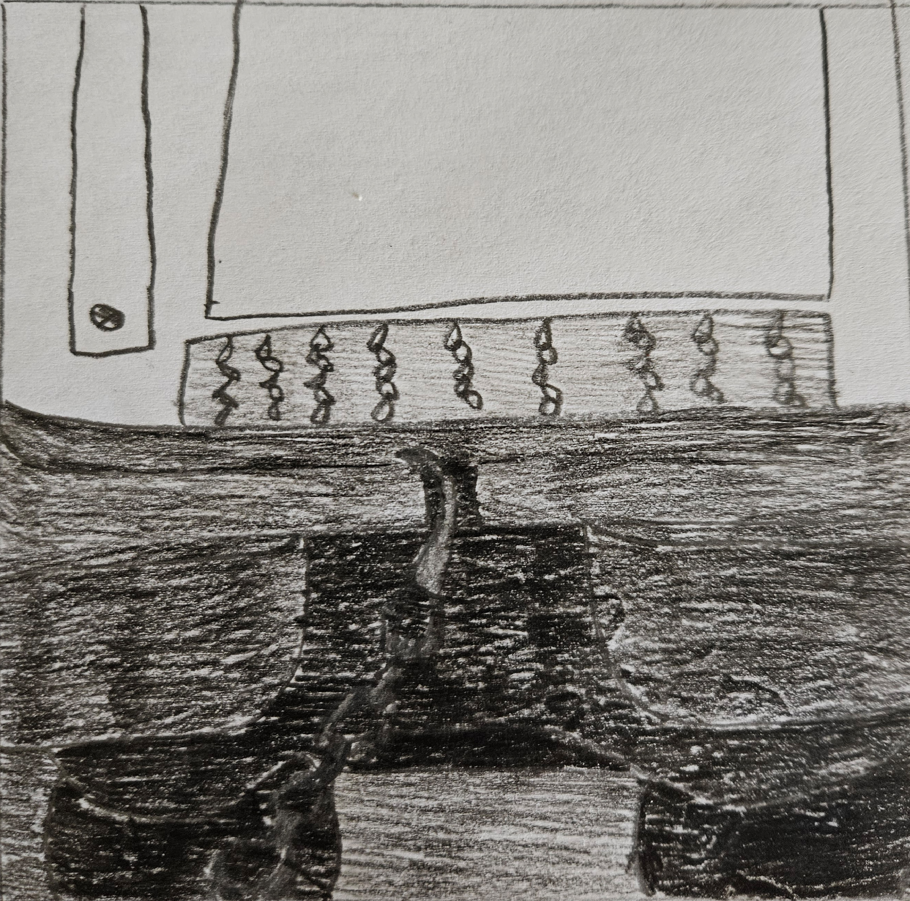
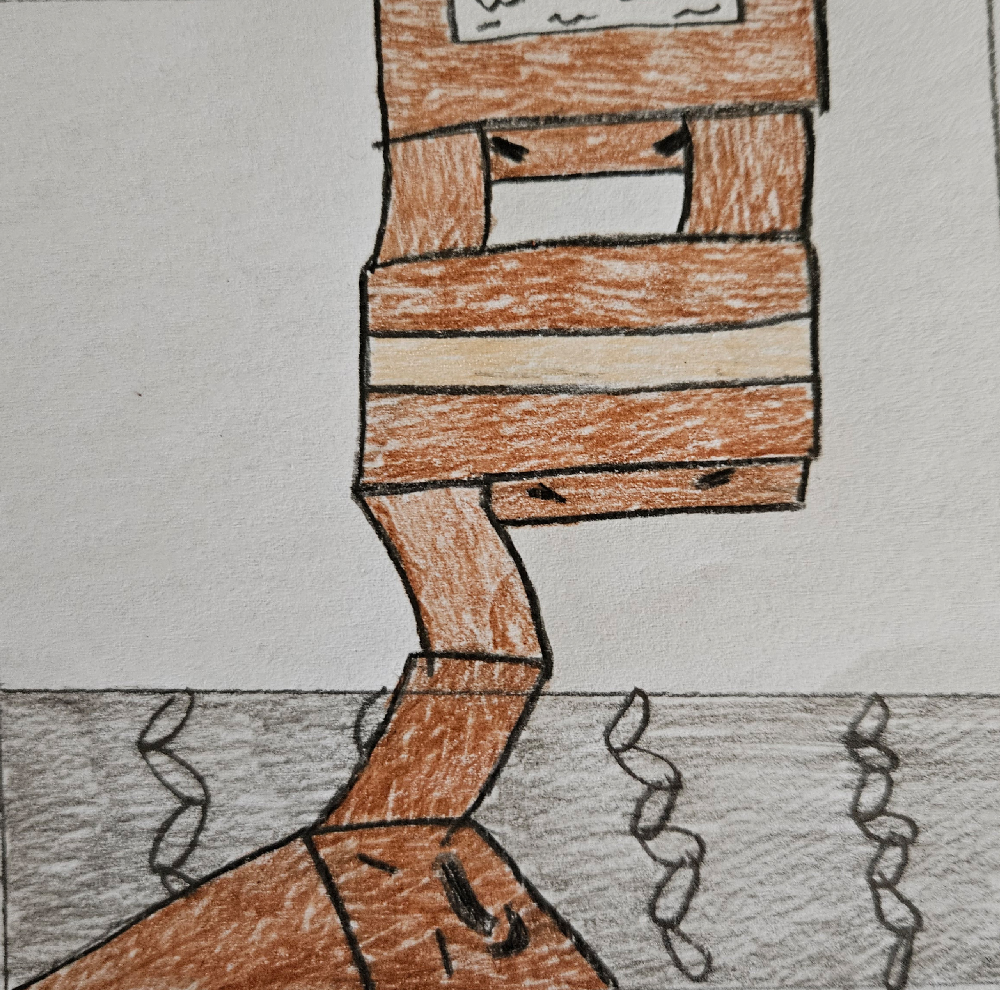

The Great Shipping Disaster
Noah Turcotte

It all started out in darkness, then the air was filled with the shrill screeching of metal as a blazing light pierced the room. It was time! The time where one of the package would be selected and fulfill their very purpose: To be delivered.

A pair of hands appeared from the light and reached out to grab a package. All the other packages look on with amazement as the top package is lifted from the stack and brought into the light. The grab package can't help but smile at the fact that they had finally been chosen.

The mailman set out to make his delivery with the package secured tightly in his grasp. The package felt awestruck by the whole experience, it was like being able to see the world on a first class flight! After a few minutes the journey was over and the package was sharply dropped on a porch. It was clear that the mailman had no care for the contents of the package. The mailman began to walk off the porch humming a tune as he headed back to his truck. The package was unsure about what happened next as no other packages had ever come back to tell the tale. While the package was waiting, it decided to spend the time by looking at the scenary. The package noticed something strange at the front door of the house it had been delievered to and decided to check its shipping label.....
It had been delievered to the wrong address! The mailman must have confused the house number for a nine instead of a six!
The mailman was almost already back to the truck, How would the package ever make it to the correct house now? As the package watched the mailman continue his journey, it begin to frantically look around its surroundings for something that could either get the mailman's attention or give the box the ability to return to the truck. The package caught notice of something rather shiny laying in the yard.
By unfolding its sides, the box was able to use the newfound flaps as makeshift arms. The package grab the shiny object and inspected it. Judging by the smell and clumps of fur caught in it, the chain was clearly a runner used to keep a dog within a yard. There is no possible way the package could have known this, but this runner was just the tool the package was looking for to get back to the truck. By whipping the runner around a few times in the air, the runner could be used like a lasso.
Bullseye! The end of the runner get caught on the bumper of the mail truck. As the mailtruck began to move, the force was enought to bring the package forward towards the truck.
The package slammed against the closed door of the truck, but was able to catch the bumper of the truck with their flaps before hitting the road below. The slamming sound of the crash was enough to alert the other packages, as the door opened to reveal the flap of a package hanging down to grab the dangling package. The package grabbed the outstreched flap and was pulled up by a chain of other packages. Once the package was pulled up, the door slammed shut! The package regailed to the other packages what had happened, and reveled in the fact that they would have to oppurtunity to be deliever to the correct house.